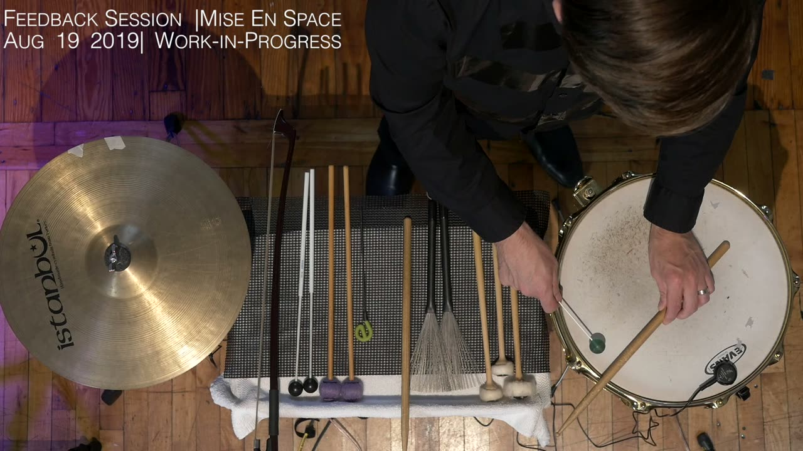
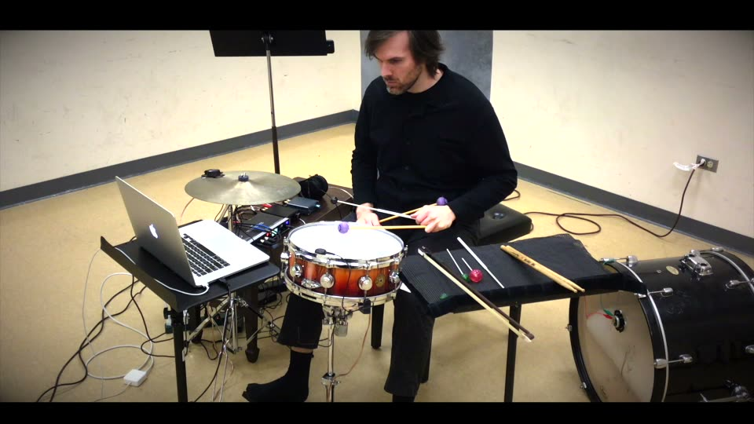

Snared, Wired, Crashed
PROJECT DESCRIPTION
Snared, Wired, Crashed is a new composition for percussion and live electronics, created in collaboration with percussionist Josh Perry. The initial idea was to develop a hybrid acoustic-electronic instrument that would allow Josh to play on one snare drum and to trigger a reaction echo on another snare, positioned at some distance across the performance space. During a residency in 2019 at Mise-En_Place in New York City we arrived at a different scheme, placing contact mics and transducer drivers on a snare and crash cymbal and creating various feedback loops between the instruments. Using a Max patch the signal from each contact mic could be sent out to either acoustic instrument, creating snare-to-snare, cymbal-to-cymbal, or snare-to-cymbal-to-snare-to-cymbal, etc feedback. Additional digital delays and feedback were built in to the patch to afford diverse feedback gestures generated in response to Josh’s performance actions. During the residency concert, we improvised together; I live-engineered the patch while Josh played on both snare and cymbal using a broad array of percussion techniques.
Following the residency we determined that our goal would be a self-contained piece that Josh could perform without a sound engineer—or put another other words, that he would be the sound engineer as well as performer of the acoustic-electronic-digital instrument. Simply adding two MIDI expression pedals, allowed him to control the outputs to the transducer drivers and therefore manage the overall level of feedback. After further sessions and tweaking, I arrived at what seems to be nearly the final instrument design. We added a bass drum and thunder sheet, each driven by copies of the outputs to snare and cymbal. These serve effectively as the “woofers” to the snare and cymbal “tweeters,” and allowing us to send less power to each speaker object (again, following the loudspeaker model, I employ crossover filters). In addition to the superior overall frequency range this has helped us avoid the occasional smoke coming from one of the transducer drivers when overdriven!
The lo-res submitted video is an improvisation using our most recent instrument setup; a hi-res video documentation is provided of the initial setup. The remaining components of the instrument I need to refine are primarily within the patch itself, namely the delay presets and a system for controlling their sequence. These will be worked out as I complete the notated score. The final composition will be no longer than 10 minutes in duration.
PROGRAM NOTES
Snared, Wired, Crashed is a new composition for percussion and live electronics, created in collaboration with percussionist Josh Perry. The composition is built around a hybrid acoustic-electronic-digital instrument that places contact mics and transducer drivers on a snare and cymbal (with an extra pair of drivers on a kick drum and thunder sheet) and various delay and feedback presets built into a Max patch controlled by the percussionist with his feet.
PERFORMANCE REQUIREMENTS
If selected, we plan to present this work remotely, although there is a *chance* we could get funding to attend in person, in which case we would need to borrow the indicated percussion equipment, but would bring everything else.
Equipment (percussion): concert snare drum, 16” paper thin crash cymbal, kick drum, thunder sheet, percussion stands, sticks and mallets
Equipment (audio): 2x contact mics, 2x Dayton Audio DAEX25 Transducer Drivers, 2x Dayton Audio DAEX32Q Transducer Drivers, 2 stereo amplifiers matched for the drivers; audio interface; laptop; 2x Yamaha FC7 Footpedal; 1x Audiofront MIDI Expression Quattro.
Space: online, will be performed remotely in a studio or hall in NYC or Atlanta, GA.
Performer: Josh Perry, percussionist in Iktus Percussion, Ensemble Mise-En.
Feasibility: see attached. Sample A is representative of the audio and video quality we would use for remote performance.
MEDIA

▶Sample A (initial version, for percussionist with sound engineer, 2019)

▶Sample B (current setup for percussionist without sound engineer, test video and audio, 2021)
ACKNOWLEDGEMENTS
The authors would like to thank Moon Young Ha and Mise-En_Place for the initial residency from which this piece developed.